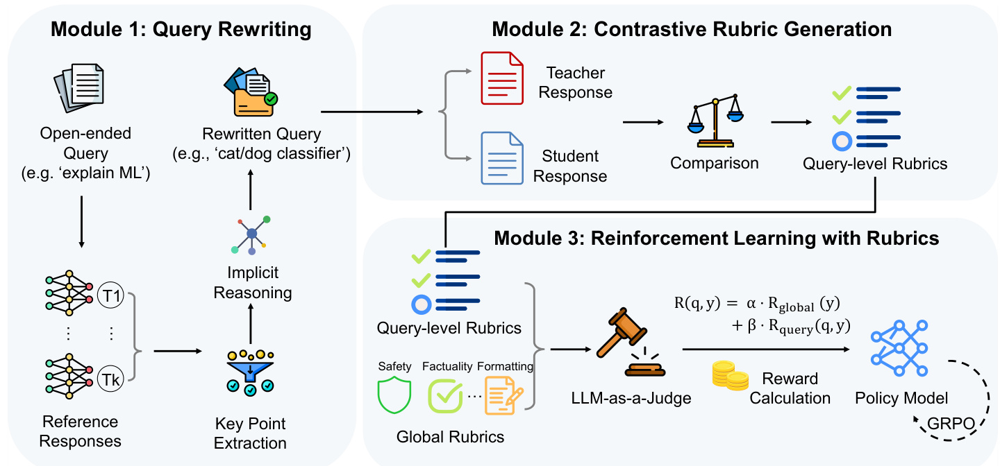
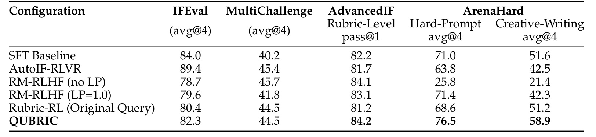
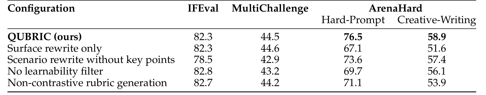
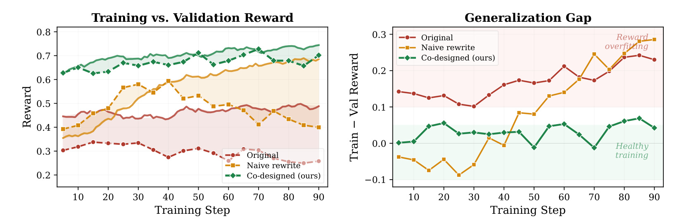
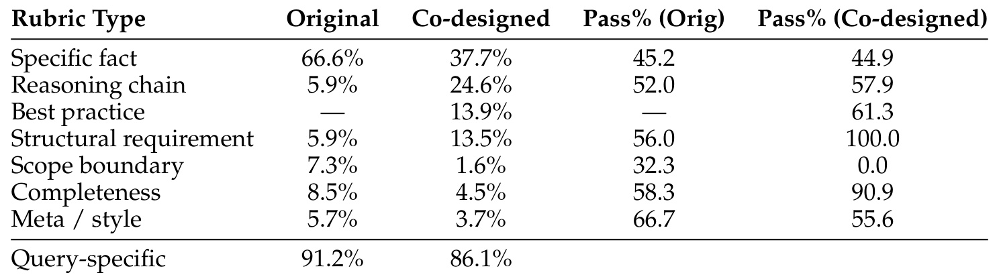

QUBRIC 这篇论文的完整标题是 “QUBRIC: Co-Designing Queries and Rubrics for RL Beyond Verifiable Rewards”，唯一论文入口为 arXiv:2606.03968。作者标注来自 Amazon 与 Georgia Institute of Technology，论文公开时间为 2026-06-02。代码/项目页状态：本轮只核验论文页面和 PDF，没有把未打开的项目入口当作独立事实来源。本文主线属于 LLM 后训练与 reward design：它不是再做一个更会打分的 judge，而是把“query 怎样被改写成可评价任务”与“rubric 怎样被写成可训练奖励”放进同一个设计问题里处理。这个角度很重要，因为开放式指令并不缺回答空间，真正缺的是可被奖励函数稳定区分的回答空间。QUBRIC 的主张可以概括为一句话：当任务没有可验证答案时，rubric-based RL 的质量上限先由 query 结构决定，再由 rubric 文本与 judge 决定。若 query 仍然宽泛，rubric 要么空泛，要么为了显得具体而引入不可核验前提；两种情况都会把 RL 信号变成噪声或拒答测试。QUBRIC 因此用 teacher-derived key points 改写 query，用 teacher-policy contrast 生成 rubric，再用 learnability filter 选择能给初始 policy 提供有效梯度的样本，最后用 GRPO 训练策略模型。下面按论文问题、方法、实验和总结四个部分精读。
1. 背景和问题
近两年大模型后训练里最强的一条线索是 RLVR，即 reinforcement learning with verifiable rewards。数学题、代码题、形式化约束任务之所以适合 RLVR，是因为系统能把答案和 ground truth、单元测试或可执行规则对上，reward 至少在主要维度上是清楚的。可是大量真实用户任务并不长这样：用户让模型解释一个概念、写一个建议、比较两个方案、生成一段故事、给出购物选择或做道德/法律推理，这些任务没有唯一答案，也很难把“好回答”压成一个简单的字符串匹配。传统 RLHF 可以训练一个标量 reward model，但 reward model 一旦把复杂判断折叠成单分数，诊断性差，容易把偏好、长度、风格和事实性混在一起。rubric-based RL 的吸引力就在这里：它把奖励拆成若干可读标准，让 judge 逐条判断 response 是否满足，从而让训练信号更结构化，也让后续审计更容易。
QUBRIC 指出的缺口是，很多 rubric-based RL 方法默认 query 是固定的，只把注意力放在 rubric 或 judge 上。这在开放式任务里是不够的。rubric 的可执行性不是凭空产生的，它依赖 query 是否已经把答案空间收窄到某个可判定区域。比如“explain machine learning”这样的 query 太宽，一个回答可以讲监督学习，也可以讲深度学习，还可以讲业务建模流程。rubric 若写成“解释准确且全面”，judge 仍然需要自己决定什么叫全面；若写成“必须提到训练集、特征、泛化和交叉验证”，又可能把某一类课程式答案硬套到所有合理回答上。这样得到的 reward 不是精准监督，而是随机偏好与风格选择。
论文进一步强调 naive narrowing 的失败。为了让开放 query 变得具体，一个重写器可能引入看似专业但实际不存在的引用，例如要求回答者遵循某个 guideline、glossary 或内部文档。query 表面上变窄了，但它把无法验证的外部前提塞进任务里，结果 rubric generator 很容易生成“必须引用该文档”或“如果不能访问该文档应拒答”一类标准。此时所有正常回答都可能失败，模型学到的不是推理能力，而是面对虚构引用时拒答或迎合。QUBRIC 把这个现象称为 fabricated-reference failure，它是本文比普通 prompt rewriting 更值得读的地方：作者不是说“query 写清楚一点会更好”，而是说“query 的结构决定 rubric 是否有可学习的判别边界”。
这个问题也解释了为什么 QUBRIC 要把 query design 和 rubric design 绑定。开放任务里仍然可能存在可评价的核心知识点，例如水结冰膨胀与氢键有关，法律推理要区分事实认定和规范适用，购物建议要同时考虑预算、重量和用途。难点是这些核心点不能直接变成答案泄露，也不能靠编造外部材料来约束。QUBRIC 的设定更像是在原始开放 query 与可训练 reward 之间插入一个“可评价任务构造器”：先找出多个强 teacher 回答里共同或关键的 atomic knowledge components，再把其中一两个转写成需要推理才能得到的场景化问题。这样，query 仍然是自然语言任务，却已经具备可写出 constitutive rubric 的结构。
所谓 constitutive rubric，是论文中另一个重要概念。它指 judge 可以只依据 rubric 文本和 response 判断是否满足，而不需要自己补外部知识或重新定义标准。例如“response explains that water expands when freezing due to hydrogen bonding”比“response provides a scientifically accurate explanation of why water expands”更适合作为训练奖励，因为前者告诉 judge 要检查什么，后者把最难的科学准确性判断又丢回 judge。QUBRIC 的目标不是让 judge 变聪明，而是让 rubric 更少依赖 judge 的隐式世界知识。这里的设计哲学很务实：如果 reward 本身需要 judge 做开放式再推理，RL 过程就会放大 judge 的不稳定；如果 reward 是一组可被逐条检查的 criteria，训练和审计才有可能稳定。
因此，QUBRIC 的问题定义可以拆成三层。第一层是 query 层：怎样把开放 query 改写成自包含、有场景、有约束、但不泄露答案的问题。第二层是 rubric 层：怎样把 teacher 与 policy 的差距转成 query-specific、可判定、对回答质量有区分度的标准。第三层是训练层：怎样过滤掉太容易、太难或低信号的 query-rubric pair，只把初始化 policy 有机会学到东西的样本交给 GRPO。论文的贡献不是某一个模块特别复杂，而是把这三层按同一条 reward 信号链路组织起来，并通过消融证明缺一不可。
2. 方法
2.1 从开放 query 到可评价任务的瓶颈
QUBRIC 的输入不是数学题那种天然带答案的样本，而是 ShareGPT 等 instruction-following 数据里的开放式 query。作者先承认一个现实：开放 query 不是没有价值，恰恰是 instruction following 和真实交互里最常见的形态；问题在于它们不能直接服务于精细 reward。对一个宽泛 query，模型可以给出多个都合理的回答，rubric generator 很难在不引入主观偏好的情况下列出“必须满足”的标准。此时 rubric 容易变成两个极端：一端是“clear, accurate, helpful”这类抽象评价词，judge 每次都要自己解释；另一端是过度具体的事实检查，把某个 teacher 回答的细节当作唯一正确路径。前者噪声大，后者偏置强，都不适合作为 RL 的稳定奖励。
论文把这种瓶颈解释为 query structure 与 rubric quality 的结构耦合。换句话说，rubric 不是 reward 设计最后一步才出现的文本产物，它是 query 空间被约束后的自然结果。若 query 没有场景、角色、约束、目标和输出格式，rubric 就只能在无限答案空间里猜测好回答的边界。若 query 具备这些结构，rubric 才能明确检查 response 是否覆盖关键推理步骤、是否遵守场景约束、是否避免不该有的外部假设。这个判断把 QUBRIC 和只做 judge prompt engineering 的方法区分开来：它改变的是训练样本本身，而不只是评分模板。

Figure 1 是本文方法的核心图，展示了三个模块如何把开放任务转成 RL 信号。左侧 Module 1 从 open-ended query 出发，生成多个 teacher reference responses，并从这些回答里抽取 key points；重写器再用 key points 构造 rewritten query，使它成为场景化、可评价的问题。中间 Module 2 同时读取 teacher response 和 student/policy response，通过 comparison 生成 query-level rubrics。右侧 Module 3 把 query-level rubrics 与 safety、factuality、formatting 等 global rubrics 结合，由 LLM-as-a-Judge 对 rollout 逐条打分，再把 reward 交给 policy model 做 GRPO。图里最值得注意的是箭头方向：rubric 不是从原始 query 直接生成，而是在 query 被 key-point-grounded rewriting 收窄之后生成；reward 也不是单一 scalar，而是由全局和查询级 criteria 组成。这样看，QUBRIC 是一个离线数据构造与在线 policy optimization 的组合系统，重写和 rubric 构造都发生在训练前，训练时 rubrics 固定，judge 只负责逐条检查。
2.2 key-point-grounded rewriting 的离线构造
第一步是 key-point extraction。论文为每个开放 query 生成来自四个 teacher models 的 reference responses，然后抽取核心 key points。这里的 key points 不是拿来做蒸馏的完整答案，而是“一个综合回答应该包含的原子知识组件”。例如一个金融回测 query 的 key points 可能包含避免 look-ahead bias、建模交易成本、从市场数据做特征工程、避免历史过拟合等。QUBRIC 还会优先处理 teacher responses 之间分歧较高的 query，因为分歧大通常意味着原 query 答案空间更宽，越需要被重写成可评价任务。
这个阶段有一个细节很关键：作者要求 selected key points 形成 rewritten query 的 determinate core answer。也就是说，重写后的 query 不能只是把 key point 贴到题面里，也不能让 key point 变成众多可选答案之一；它要让这些 key points 成为合理回答自然会推出的核心内容。这样做可以避免两个问题。第一，避免答案泄露。如果 query 直接写“请说明 look-ahead bias 和 transaction cost”，rubric 当然好写，但模型只是在复述题面。第二，避免不可验证引用。如果 query 说“根据 ACME internal backtesting handbook 回答”，rubric 看似具体，实则依赖不存在的文档。QUBRIC 选择的是第三条路：把 key point 放进现实场景，让模型通过上下文约束推出它。
scenario construction 的 prompt 会选一到两个 key points，并构造包含专业角色、具体约束、数据或决策目标的场景。论文强调这些场景要 self-contained，回答者不应需要访问外部材料才能作答。它还会加入 implicit constraints 和 plausible alternatives，使答案空间更窄。例如不是简单问“如何改进推荐系统”，而是描述一个学生预算、轻量笔记本、续航和价格的购物场景；不是简单问“解释机器学习”，而是让回答者面对一个 cat/dog classifier 的具体需求。最终 query 通常还带有输出格式限制，例如“2-3 sentences”，这不是为了格式本身，而是防止模型用过长回答绕过明确判断。
从数据构造角度看，这一步最像把一个开放语义簇压成一个局部判别任务。原始 query 保留了用户意图，但没有告诉训练系统什么差异值得奖励；teacher key points 提供了候选答案核心，但如果直接放进题面又会变成泄题；scenario rewrite 则在两者之间建立了间接约束。好的 rewrite 应该让 key point 成为“解这道题时必须想到的中间结论”，而不是“题面已经点名的关键词”。这也是 QUBRIC 与一般 synthetic instruction generation 的差异：它不追求生成更多看起来真实的指令，而是追求生成能被 rubric 稳定检查的指令。若一个场景无法让 selected key points 成为自然答案，或者需要读者假设不存在的外部文档，它宁可被过滤掉，也不应进入 RL 训练。
重写之后还有 validation stage。论文列出四类检查：selected key points 是否仍然正确回答 rewritten query；scenario 是否泄露答案；约束是否内部一致；复杂度是否落在目标水平。未通过的 query 会被丢弃。这里需要注意 validation 是 prompt-based，不是人工验证，所以它本身也可能有误判，这是论文局限之一。不过从系统设计角度看，它至少把“query 能否服务于 rubric”作为显式质量门槛，而不是让后续训练阶段自行吸收脏样本。
2.3 contrastive query-level rubric design
有了 rewritten query 后，QUBRIC 不直接让模型从 query 和 teacher answer 生成 rubric，而是做 contrastive generation：比较 stronger teacher response 与 weaker policy response，把二者之间的质量差距转成 query-level criteria。这个设计比非对比式 rubric generation 更稳，因为 teacher answer 单独看可能包含很多正确但不必要的细节，policy answer 单独看又只能说明当前模型缺什么。contrastive prompt 的作用是找出“teacher 做到了、policy 没做到、且对这道 query 的好回答构成必要标准”的差异。
论文特别强调 query-level rubrics 要 constitutive。可以把它理解为一种局部、可检查、回答内可验证的标准。它不要求 judge 重新判断某个开放命题是否正确，而是要求 response 显式包含某种 reasoning chain、限制条件、拒绝边界或 best-practice recommendation。对于训练来说，这类 rubric 的好处是 reward 更可诊断：如果模型失败，可以知道它缺的是 reasoning chain、scope boundary、formatting 还是 factuality。对于数据构造来说，它也能减少 reward hacking 的机会，因为标准越清楚，模型越难通过冗长、模糊或模板化语言骗过 judge。
本文把 global rubrics 和 query-level rubrics 分开。global rubrics 处理安全、事实性、格式等跨 query 的一般要求；query-level rubrics 处理这道题独有的内容要求。两者组合成最终 reward：
符号解释：$q$ 是 rewritten query，$y$ 是 policy rollout，$R_{global}(y)$ 是与具体 query 无关的全局标准得分，$R_{query}(q,y)$ 是 query-level rubrics 的聚合得分，$\alpha$ 与 $\beta$ 分别是两类 reward 的权重。论文附录超参数表给出的 instruction-following 和 shopping 设置中，global/query weight 是 0.3 / 0.7，说明训练主要依赖 query-specific 标准，但仍保留全局约束避免回答在安全、事实或格式上漂移。
更细地看，每条 rubric 可以视作一个二元判断：
符号解释：$r_i(q,y)$ 表示第 $i$ 条 rubric 对回答 $y$ 的通过情况，$Judge$ 是 LLM-as-a-Judge，$rubric_i$ 是某个具体 criterion。论文没有把所有二元 reward 写成复杂公式，但 Figure 1 与方法描述都说明了 per-rubric binary rewards 的机制。这个二元化有两个实际作用：第一，训练信号可以按 rubric 维度分解，便于发现是哪些 criteria 提供梯度；第二，后续 learnability filtering 能基于通过率估计样本难度。
2.4 learnability filtering 与 GRPO 奖励
QUBRIC 的第三个关键组件是 learnability filtering。即使 query 和 rubric 都看起来合理，某些样本对当前 policy 仍然没有训练价值。太容易的样本，初始 policy 已经高通过率，继续训练只会浪费 batch；太难的样本，policy 几乎全 fail，GRPO 得不到可区分的相对优势；低信号样本则可能让 judge 输出不稳定。论文使用一个简单但有效的 corridor：在同一 judge 和 rubric set 下，用初始化 policy 的 pass rate 估计难度，只保留 20% 到 50% 之间的 query-rubric pairs。
可以把这个过滤写成：
符号解释：$K$ 是对同一 query 采样的 rollout 数，$y_k$ 是第 $k$ 个回答，$r(q,y_k)$ 是该回答在对应 rubric 下是否通过。$p_{pass}$ 落在 0.2 到 0.5 之间表示这个标准既不是模型已经稳定掌握的内容，也不是当前能力完全够不到的内容。作者明确说这个阈值是 pragmatic heuristic，而不是最优搜索得到的常数；但实验消融显示去掉 filter 会让 ArenaHard hard-prompt 从 76.5 掉到 69.7，说明这个启发式在本文设置里很重要。
训练阶段使用 GRPO。策略模型是 Qwen2.5-32B post-SFT，judge 与 rubric generator 使用 Qwen3-235B-A22B，teacher models 包含 GPT-OSS、Qwen3-235B、DeepSeek-V3.1、Claude 3.7 Sonnet。instruction-following 训练数据来自 ShareGPT，经 key-point-grounded rewriting 和 learnability filtering 后得到 8,000 个训练实例；shopping 设置则从少量人工 seed examples 合成 3,000 个 queries。GRPO 的 rollout 数在 IF 设置是 8，在 shopping 设置是 32；learning rate 为 1e-6，KL penalty coefficient 为 0.001。论文没有把训练算法本身作为贡献，重点是 reward 的构造方式：如果 query-rubric pair 不可评价或不可学习，再先进的 RL optimizer 也只是在优化噪声。
这里还要区分训练期与部署期。QUBRIC 的 query rewriting、teacher response 生成、contrastive rubric generation 和 learnability filtering 都是离线过程，训练时使用固定 rubrics 对 rollout 打分；推理部署时不需要把用户 query 再跑一遍整套 QUBRIC pipeline。因此它的主要成本集中在数据生产和 RL 训练，而不是每次线上生成。但这并不意味着成本可以忽略：四个 teacher、多轮 policy rollout、强 judge、强 rubric generator 和人工或模型验证都会把数据构造成本推高。若要迁移到企业助手或推荐问答，比较现实的做法是只对高价值、高频、开放且当前 reward 不稳定的 query cluster 使用 QUBRIC，而不是把所有指令都重写一遍。
另一个实现细节是，global rubrics 不能被 query-level rubrics 完全替代。query-level criteria 能提高任务相关性，但也可能诱导模型为了满足局部目标而牺牲安全、事实或格式边界。购物实验里，query-level rubrics 带来帮助性提升的同时也暴露了重复推荐、ID hallucination 或类别错误等副作用，说明局部标准越强，越需要全局约束校正。QUBRIC 使用 $\alpha$ 与 $\beta$ 的组合权重，本质是在回答“这个 rollout 既要满足这道题的核心标准，也不能破坏跨任务的基本行为规范”。这对开放式 RL 尤其重要，因为开放任务的坏结果往往不是单个 rubric fail，而是某个局部优化目标把整体回答带偏。
因此，方法章里最该复核的不是某个 prompt 的措辞，而是接口契约是否闭合：teacher key points 是否只作为改写依据而不是蒸馏目标，rewritten query 是否自包含，rubric 是否能被 judge 逐条检查，filter 是否基于同一套 judge/rubric 估计 pass rate，GRPO 训练时使用的 reward 是否与离线审计一致。任一环节断开，系统都会退回到常见失败模式：要么用宽泛标准奖励冗长回答，要么用虚构前提奖励拒答，要么用过窄事实检查训练出只会迎合数据集的策略模型。
从复现角度看，QUBRIC 有几个隐含依赖。第一，teacher pool 的质量和多样性直接影响 key points；如果 teacher 之间共享偏见，key points 也会偏。第二，rewriting validation 是 prompt-based，可能把看似自包含但实际不严谨的场景放进训练集。第三，LLM judge 的一致性虽然经过 Table 6/7 检查，但 judge 仍可能偏好某种表达风格。第四，global/query weight、pass-rate corridor、rollout 数和长度惩罚都会影响最终结果。也就是说，QUBRIC 的方法价值在于把这些接口显式化，而不是消除所有人工与模型判断。
3. 实验结果
QUBRIC 的实验分成四条证据链：instruction-following 主结果、跨域迁移、购物 helpfulness 应用、以及 co-design 组件消融。先看主结果。论文在 IFEval、MultiChallenge、AdvancedIF 和 ArenaHard 上比较 SFT Baseline、AutoIF-RLVR、RM-RLHF、Rubric-RL original query 与 QUBRIC。最醒目的结果不是所有指标都上升，而是收益集中在更考验回答质量和推理的 benchmark 上。ArenaHard hard-prompt 从 SFT 的 71.0 提升到 76.5，creative-writing 从 51.6 提升到 58.9；AdvancedIF rubric-level pass@1 从 82.2 到 84.2。与此同时，IFEval 从 84.0 降到 82.3，论文解释为严格格式遵循与回答质量之间存在 trade-off，尤其当模型回答长度增长时可能超过 benchmark 限制。

Table 1 的重点在于，它不是把 QUBRIC 描述成全面无副作用的后训练方法。AutoIF-RLVR 在 IFEval 上达到 89.4，但在 ArenaHard hard-prompt 只有 63.8，说明可验证格式约束对严格指令有帮助，却未必提升开放回答质量。RM-RLHF no LP 在 ArenaHard 上跌到 25.8/21.4，带 length penalty 后 hard-prompt 回到 71.4 但 creative-writing 仍只有 42.3，提示单标量 reward 和长度控制之间很脆。Rubric-RL original query 也没有恢复 QUBRIC 的收益，hard-prompt 是 68.6，creative-writing 是 51.2。QUBRIC 在这个表里的相对优势说明：只做 rubric RL 不够，关键是 rubric 所依赖的 query 结构也要被重新构造。表格还提醒读者，QUBRIC 的目标不是成为格式约束任务的最优方法，而是在开放质量任务上提供更稳定的 reward。
跨域迁移结果也支持论文的主张。QUBRIC 只用 instruction-following 数据训练，却在 MoReBench、PLawBench、MuSR 三个 held-out benchmark 上都提升，平均从 SFT 的 56.41 到 62.72，增益约 +6.31pp。最大提升出现在 PLawBench，从 53.97 到 62.82，论文解释这是需要结构化论证的中文法律推理任务。这个结果对 QUBRIC 很重要，因为如果 co-designed rubrics 只是让模型记住训练集中某些 query-specific facts，那么跨域 reasoning benchmark 不应有明显提升。作者也把 Math-RLVR 放进对比，发现它在这些 benchmark 上并不稳定，尤其 no length penalty 时 MuSR 输出大量被截断，说明 domain-specific RLVR 的推理收益不一定自然迁移到开放式判断任务。
购物 helpfulness 是应用证据，但需要谨慎读。Table 3 显示 global-only rubrics 已经比 verifiable-reward training 有帮助，query-level rubrics 的 helpfulness 指标更高，query+global 的组合在帮助性和全局约束之间更平衡。这里的关键不是“购物推荐一定适合 QUBRIC”，而是 rubric granularity 在真实多轮 query 中会影响质量维度。附录 Table 14 还指出 query-level rubrics 可能带来副作用，例如重复推荐、ID hallucination 或 mismatch 等错误率变化，因此论文最后选择 core global rubrics 加 query-level rubrics 的组合。这部分证据的外推边界很明显：它来自 proprietary shopping benchmark，不能直接当作公开线上系统收益，只能说明 QUBRIC 的 reward decomposition 在非可验证商业任务中有应用迹象。
更有说服力的是消融实验。Table 5 在同一 base model、judge、RL algorithm 和 training budget 下，只改变 query 和 rubric construction。QUBRIC 是 82.3 / 44.5 / 76.5 / 58.9；surface rewrite only 在 IFEval 和 MultiChallenge 接近，但 ArenaHard hard-prompt 降到 67.1，creative-writing 降到 51.6，说明只改措辞和清晰度不够。scenario rewrite without key points 的 hard-prompt 是 73.6，接近但仍低于 QUBRIC，并且 IFEval/MultiChallenge 更差，说明场景化需要 teacher-derived key points 约束。No learnability filter 的 hard-prompt 只有 69.7，证明过滤低信号样本很关键。Non-contrastive rubric generation 的 hard-prompt 71.1、creative-writing 53.9，说明只从 teacher response 生成 rubric 也不如比较 teacher-policy gap。

Table 5 的阅读重点是“每个模块损失的是哪类能力”。surface rewrite only 没有真正缩小 answer space，因此 rubric 仍然容易停留在风格或浅层清晰度；scenario rewrite without key points 虽然创建了场景，但没有可靠 anchor，可能引入无关约束或偏离原始任务意图；non-contrastive rubric generation 没有看 policy 的失败点，容易把 teacher 的完美答案细节写成 rubric，导致训练目标过窄；no learnability filter 则把太易/太难样本混入训练，让 GRPO 的相对优势不稳定。QUBRIC 的提升不是某个 trick 的单点贡献，而是三个环节共同让 reward 既有内容、又可判定、还对当前 policy 可学习。
训练动态进一步解释了为什么这些组件重要。Figure 2 左图比较 original、naive rewrite 和 co-designed strategy 的 training/validation reward；右图比较 train-validation gap。co-designed rewrites 的 validation reward 稳步上升，gap 维持在接近零的水平；original queries 和 naive rewrite 则出现训练与验证分离，gap 扩大到约 0.25-0.30。这个现象说明原始或 naive query 下的 rubric 更容易被训练集模式利用，模型在训练 reward 上看似变好，但验证 reward 不跟随，属于 reward overfitting。co-designed query-rubric pair 则更可能捕捉可迁移的 reasoning criteria。

Figure 2 的两张子图合在一起看，给出了比最终分数更细的证据。左侧训练/验证 reward 中，co-designed 的绿色曲线在训练和验证上都保持上升，说明 reward 不是只在训练样本上被模型“背下来”；naive rewrite 的训练曲线一度上升，但验证曲线并不稳定，说明具体化 query 可能反而制造虚假约束。右侧 gap 图更直观，co-designed gap 长期在健康区域附近，original 和 naive rewrite 则逐步进入 reward overfitting 区。这个结果与前文 fabricated-reference failure 的叙事一致：如果 query 结构错误，rubric 可能鼓励模型学习训练集特有表述或拒答模式；如果 query 和 rubric 联合设计，reward 更接近真正可迁移的任务标准。
最后看 rubric composition。Table 13 从 50 个随机训练 records 中手工分类 rubric 类型，比较 original queries 和 co-designed queries。Original queries 产生的 rubric 中 specific fact 占 66.6%，reasoning chain 只有 5.9%；co-designed queries 把 specific fact 降到 37.7%，reasoning chain 提到 24.6%，best practice 从无到 13.9%，scope boundary 从 7.3% 降到 1.6%。这说明 QUBRIC 不只是把 query 写得更长或更具体，而是实质改变了 rubric generator 能写出的标准类型。对于开放式 RL 来说，这可能比单个 benchmark 分数更重要，因为 reward 类型决定模型会被训练成什么。

Table 13 还显示 pass-rate 并不是简单越高越好。Specific fact 在 original 和 co-designed 下 pass rate 接近 45，reasoning chain 在 co-designed 下 pass rate 57.9，best practice 61.3，structural requirement 100.0，scope boundary 0.0。这里的读法不是“100% 的 structural requirement 最好”，而是要回到 learnability：太高或太低的 pass rate 都可能低信号。作者在主流程中用 20-50% corridor 做过滤，Table 13 则从类型层面解释为什么 co-designed query 更容易生成 reasoning-chain 和 best-practice 这类对开放任务有意义的 rubric。它让 reward 从“检查某个具体事实是否出现”转向“检查回答是否遵循任务场景下的推理链和建议原则”。
实验整体上支持论文主张，但也有边界。第一，主结果中的 IFEval 下降说明 QUBRIC 不是所有 instruction-following 指标的无条件改进；严格格式任务可能仍需要专门的可验证约束。第二，PLawBench、MoReBench 等迁移结果是 single-run，缺少多随机种子稳定性。第三，shopping benchmark 是 proprietary，外部读者不能复算。第四，judge 与 rubric generator 都是强 LLM，系统成本和 judge 偏差没有完全展开。第五，teacher key points 可能继承 teacher pool 的表达偏好。尽管如此，消融、训练动态和 rubric composition 三类证据相互呼应，使“query-rubric co-design 比单独 rubric RL 更可靠”这个结论比较有支撑。
4. 总结
QUBRIC 最值得保留的思想是：在非可验证奖励场景里，reward engineering 不能只发生在 rubric 或 judge 层。开放 query 如果没有被构造成可评价任务，后续再精致的 rubric prompt 都会被宽泛答案空间拖住。作者用 teacher key points 把任务意图固定下来，用场景化 rewrite 避免虚构引用和答案泄露，用 contrastive generation 把 teacher-policy gap 转成 constitutive rubrics，再用 learnability filtering 把训练样本限制在当前 policy 能学到东西的难度区间。这条链路把“可评价”“可判定”“可学习”三个条件连在一起，是本文相对普通 RLHF、rubric RL 或 query rewriting 工作的主要增量。
我对这篇论文的判断是，它提供了一个很实用的后训练数据构造框架，尤其适合没有唯一答案但可以拆成明确判断标准的任务，例如复杂指令跟随、法律/道德推理、叙事理解、购物建议和企业内部助手。它不一定适合所有任务：如果任务本身可执行验证，RLVR 可能更简单；如果任务高度主观且没有稳定 key points，QUBRIC 仍然会依赖 teacher 和 judge 的偏好；如果业务侧无法承受强 teacher、强 judge、离线重写和多 rollout 过滤的成本，它的工程可行性会下降。因此，把它落地到真实系统时，不能只复制 prompt，而要先问四个问题：哪些 query 真的需要被重写，哪些 key points 可以可靠抽取，哪些 rubric 可以做到 constitutive，哪些样本对当前 policy 有可学习梯度。
局限可以归纳为四点。第一，validation、rubric generation 和 judge 都依赖 LLM，虽然论文做了 judge 一致性检查，但还没有完全消除模型评估偏差。第二，teacher-derived key points 可能把 teacher pool 的知识盲点或风格偏好固化进训练数据。第三，learnability corridor 的 20-50% 是启发式阈值，不同模型规模、rollout 数、任务分布下可能需要重调。第四，购物实验和部分评估是内部或 single-run 结果，复现者需要等待更多代码、数据或公开 benchmark 细节。后续跟进建议也很明确：一是观察作者是否释放 query rewriting、rubric generation 和 filtering 的脚本；二是把 QUBRIC 与只做 judge 改写、只做 rejection sampling、只做 DPO/RLHF 的方法在同一数据上并排比较；三是专门测量 rubric 类型分布与线上用户偏好的关系；四是检查长回答、格式约束和 safety boundary 在 QUBRIC 训练后是否出现新的退化。
如果只用一句话总结，QUBRIC 的贡献不是发明了新的 RL 算法，而是把非可验证任务里的训练样本从“开放 query + 模糊 reward”改造成“场景 query + 可检查 rubric + 可学习难度”。这使 rubric-based RL 更像一个可审计的数据工程与奖励设计问题，而不是单纯依赖强 judge 的黑箱偏好优化。对于后续研究，最值得借鉴的是它的失败分析和消融设计：先证明为什么原始 query 会让 rubric 退化，再证明每个构造步骤如何改变 reward 类型和训练动态。对于工程落地，最值得警惕的是成本和偏差：QUBRIC 可以让开放任务更适合 RL，但它不会自动保证 judge 公平、teacher 正确或场景覆盖完整。真正可用的版本需要把这套 co-design 流程接到持续审计、人工抽检和线上反馈闭环里。